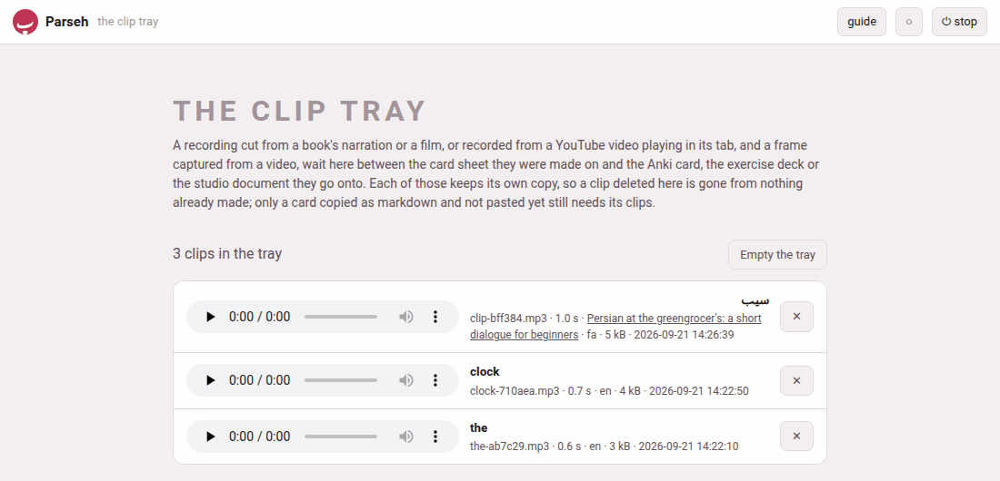

The clip tray
A clip is made where the sentence is — in the book reader, in the video player — and used somewhere else: on an Anki card, in an exercise deck, in a studio document. In between it waits in the clip tray, the folder clips/ at the top of the toolbox: one flat folder of the recordings cut for cards and of the frames captured for exercise decks and markdown, each with a small .json file beside it saying its language, its words and where it was cut from. It is yours, like the decks, and never part of the repository.
1. A name no other file has#
A clip’s name is its word and six random characters: wind-47de68.mp3, clock-710aea.mp3. A word in a script a file name cannot safely carry — Persian, Japanese, Hindi — gives clip-bff384.mp3 instead; the word itself is kept in the clip’s .json, and the tray’s page shows it.
Because no two files in the toolbox share a name, a card can name its recording simply as audio/wind-47de68.mp3 wherever it goes. An Anki card, an exercise deck and a studio document each look in the tray for a file they are sent and do not have, and copy it in. From then on each keeps its own copy.
2. What stays in the tray, and what leaves#
The sheets keep the tray tidy by themselves:
- Kept:
- a clip that went onto a card — saved to Anki, added to a deck, copied as markdown — and a frame that went into a deck or into markdown, since the same file may go to a second place. So does one whose card is still on its way: close the sheet the moment after add to deck and the deck still finds its recording in the tray.
- Removed:
- a clip nobody used — taken off the card with remove, replaced by another, left on a sheet that was closed (or opened again on another word) without saving, adding or copying, or cut in the editor and then cancelled — and a frame that was removed, replaced or left on a closed sheet in the same way.
3. Pasting a card with its clips#
A card copied as markdown carries only the names. Pasted into a saved studio document, it brings its files in from the tray at once (Brought 2 files from the clip tray), and the preview plays the recording. Pasted into a deck’s Add exercise… with Paste markdown…, the files are shown from the tray in the form’s preview and come into the deck when the exercise is added.
A studio document’s Recordings… also lists the tray’s recordings in the document’s language, under Clips cut from books and videos: Add puts one in at the cursor and copies it into the document, and ✕ deletes it from the tray.
4. The tray’s own page#
✂ The clip tray on the hub (/clips/) lists every clip in the tray, newest first and in every language: a recording with its player, a frame as a picture, each with its words, its file name, its length (a recording’s), the film it was cut from (its title, a link back to the moment), its language, its size and when it was made. The count sits above the list — 3 clips in the tray.

| Button | What it does |
|---|---|
| ✕ on a row | deletes that clip, after asking: Delete “clock-710aea.mp3” from the clip tray? A card, a deck or a document it already went onto keeps its own copy. |
| Empty the tray | deletes every clip, after asking; greyed out when the tray is empty |
Because every place a clip goes keeps its own copy, deleting a clip or emptying the tray breaks nothing already made. The one thing that still needs the tray is a card copied as markdown and not pasted yet — the question before Empty the tray says so: a card copied as markdown and not pasted yet loses its recording and its frame. And a card still open on a sheet loses its clip too: its save then says the recording … is no longer in the clip tray, and you cut it again.
The hub’s door says how many clips wait — 3 clips, or the tray is empty.
5. What the tray keeps, and in what form#
| What | How the tray keeps it |
|---|---|
| a recording cut by the server | the format the machine’s ffmpeg writes best — MP3 as a rule |
| a recording made in the browser (no ffmpeg on the server, or a YouTube video) | re-encoded into that format when the server has ffmpeg; kept as the WAV it came as when it has not |
| a frame | the JPEG the capture made |
The tray refuses a recording over 30 MB, a picture over 15 MB, a clip longer than 300 seconds, and a recording that turns out to hold no sound at all (the recording holds no sound).